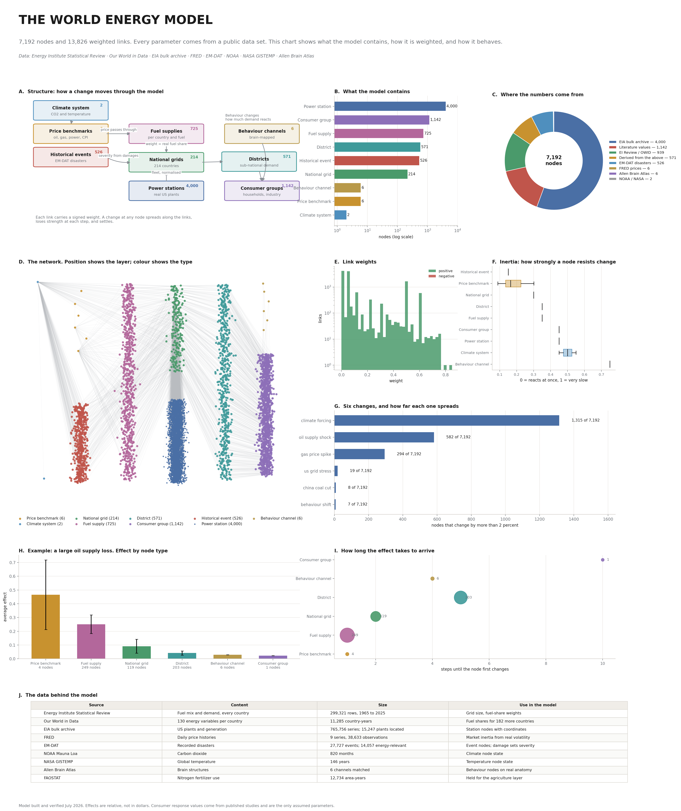

1,906 of the model's 7,192 nodes, at their recorded coordinates.
Andrew Silvestri
Chemical engineering at UT Austin. Energy systems modelling.
I build models of energy systems, from the thermodynamics of a single vessel up to a model of the world energy system with 7,192 nodes. Everything here ships with its code, its data sources, and its limits written down.
A model of the world energy system
7,192 nodes and 13,826 weighted links. Real power plants, real national fuel mixes, real recorded disasters, real price histories, and the measured climate record. Apply a change anywhere and watch it move through the system.
Every parameter comes from a public data set. Every node names its source.
Open the atlas How it works How it got there
The model at a glance: what it contains, how it is weighted, and how it behaves. All figures.
Focused models
Industrial heat electrification break-even
Cost of heat from an electric boiler against a gas boiler in Texas. The gap between the fuel prices decides the outcome. Break-even electricity is about 1.5 cents per kilowatt hour at $3.50 gas, and capital cost moves it very little.
Battery revenue simulator
Linear program over 8,760 hours. Value flattens above four hours of storage duration, which is the expected result, now measured.
Why our sorbent could not do direct air capture
Using the laboratory's own isotherm parameters, the material holds almost nothing at 420 parts per million. A negative result, and the reason the project changed material.
Pipeline liquid holdup calculator
A spreadsheet with 19,653 simulation runs, ported to an interactive tool. The port matched the workbook formulas exactly, and showed that the workbook's displayed values carried a stale calculation.
The world energy web, v1 to v5
Five generations of shock propagation through the global energy system, from 52,000 nodes to 959,000 and back down to 7,192. The smallest version is the one worth trusting, and the page explains why.
Elsewhere
Longevity quotient
How long an animal lives, against how long an animal of its size should live. Body mass predicts lifespan across fourteen orders of magnitude; the quotient is what is left once that relationship is divided out. An ocean quahog beats its prediction thirty-two-fold, a honey bee worker misses it twentyfold, and the queen that shares her genome does not.
Open the visualiserBuilt with Python, Julia and public data. All source is downloadable.